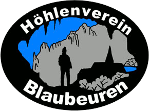
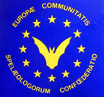

Höhlenverein Blaubeuren e.V.

Internationales Ausbildungslager für junge Höhlenforscherund an der Höhlenforschung interessierte JugendlicheVom 28.7.2018 bis 11.8.2018Zeltlager am Vereinsheim in Blaubeuren - SeißenEmpfohlenes Teilnahmealter ab 16 JahrenHöhlen sind Geotope und Biotope, und somit sensible Klimaarchive unserer Erde, die es zu erforschen gilt. Erforschung und Schutz dieser Klimaarchive sind genauso wie die Erforschung des jetzigen Höhlenklimas, welches ein Indikator für Klima Veränderungen ist, ein aktuelles und außerordentlich wichtiges europäisches Anliegen. Höhlenforscher können durch internationale Zusammenarbeit etwas für die Erforschung und den Schutz dieser Klimaarchive beitragen. Durch eine solide Ausbildung können optimale Voraussetzungen für Forschungen geboten werden. Hierzu bieten wir euch verschiedene Themen und ein umfangreiches Rahmenprogramm zu allen wichtigen Bereichen der Höhlenforschung an. Optimales Üben und Lernen wird durch kleine Gruppen gewährleistet. Ein weiteres Ziel des Lagers ist es, dass die Teilnehmer Gleichgesinnte aus dem In-und Ausland kennen lernen, sich über ihr Hobby und ihre Interessen, genauso über ihre Kulturen austauschen, und sich so Möglichkeiten ergeben, später auch deren Karstgebiete bzw. Höhlen zu besuchen und gemeinsam Forschungen zu betreiben. Das Lagerprogramm richtet sich an junge Leute, die erstes Interesse an der Höhlenforschung haben, aber auch an die, die bereits Erfahrungen in der Höhlenforschung gewonnen haben und sich in diesem Rahmen weiterbilden wollen. Die Teilnehmer sollten deutsche oder englische Sprachkenntnisse haben. |
Unsere Sponsoren |